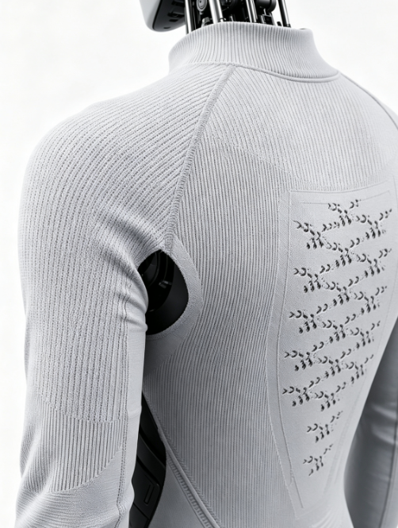

Roboskin · Knit Bionic Soft Skin
We Knit the
Second Skin for Robots
Combining textile flexibility, engineering precision and sensing potential, we create fitted, breathable and maintainable soft shells for embodied robots.

Ventilation MeshTargeted airflow and cooling
Elastic Joint ZoneMoves with the mechanism
Integral KnittingFewer seams and weak points
YINGYUN / 01SOFT-SKIN SYSTEM
 KNIT STRUCTURE / DETAIL
KNIT STRUCTURE / DETAILSCROLL TO EXPLORE